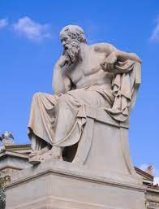
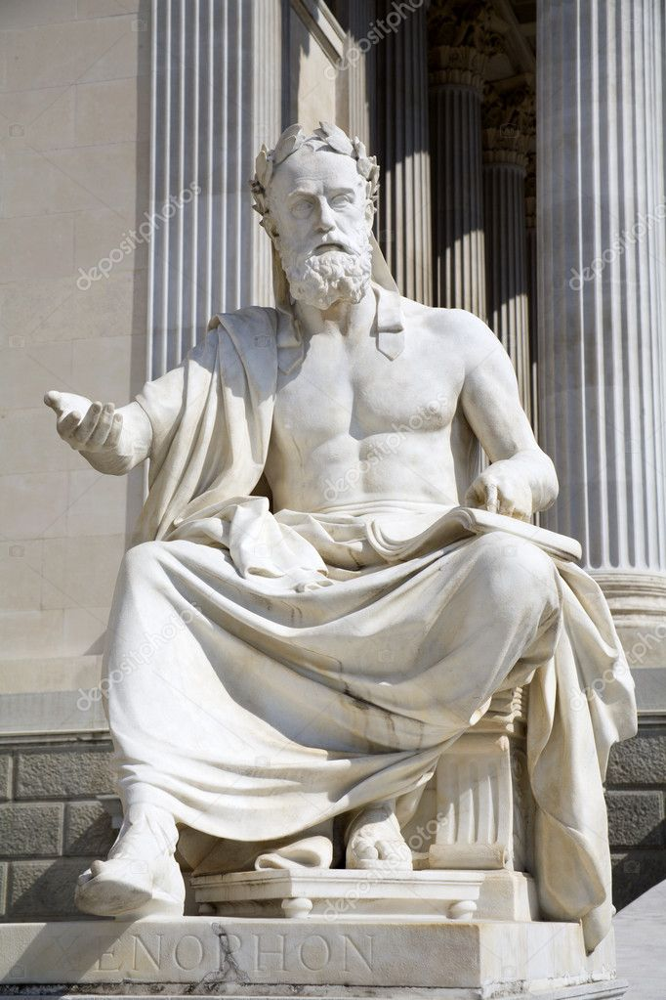

O período socrático é uma fase da história da filosofia grega que se estende desde a vida de Sócrates
(469/470 aC - 399 aC) até a morte de Platão (347 aC). Sócrates é considerado o pai da filosofia ocidental
por sua busca por uma verdade universal através do diálogo e do questionamento sistemático. Ele não deixou
nada escrito, mas suas ideias foram registradas por seus discípulos, especialmente Platão, que se tornou um
dos filósofos mais importantes da história. Outros discípulos notáveis de Sócrates incluem Xenofonte e
Aristipo. O período socrático foi uma época de intensa reflexão filosófica e influenciou profundamente o
pensamento ocidental. O período socrático, também conhecido como período pré-socrático, refere-se a um
período na filosofia grega que antecedeu a evolução de Sócrates. Esse período foi caracterizado por debates
e especulações filosóficas sobre o universo, a natureza e o ser humano.
Os filósofos pré-socráticos desenvolveram suas teorias e ideias sem uma metodologia sistemática, buscando
entender a realidade por meio da observação e da reflexão. Eles também foram responsáveis por introduzir a
ideia de que o universo é governado por leis naturais, em oposição à visão anterior que considerava a
existência dos deuses como explicação para os fenômenos naturais.
Alguns dos filósofos pré-socráticos mais importantes incluem Tales de Mileto, Anaximandro, Anaxímenes,
Pitágoras, Heráclito e Parmênides. Cada um deles apresentou uma visão diferente sobre a natureza da
realidade e a relação entre os seres humanos e o universo.
Apesar de suas diferenças, esses filósofos sentiam-se significativamente para o desenvolvimento da filosofia
ocidental, influenciando o pensamento de filósofos posteriores, como Sócrates, Platão e Aristóteles.

Retrato de Sócrates
Sócrates foi um filósofo grego que viveu em Atenas no século V aC. Ele é conhecido por suas ideias
inovadoras sobre ética, conhecimento e justiça, e por sua influência duradoura na filosofia ocidental.
Sócrates não deixou nenhum escrito,
porém seu pensamento foi transmitido por seus discípulos, especialmente Platão, que o apresentou em seus
diálogos filosóficos. A figura histórica de Sócrates é muitas vezes difícil de discernir dos personagens
nos diálogos platônicos, mas algumas informações sobre sua vida são conhecidas através de outros
escritores, como Xenofonte e Aristófanes.
Sócrates não era um filósofo profissional e não cobrava por suas aulas, preferindo discutir questões
importantes com seus concidadãos em praças públicas e outros lugares públicos. Ele acreditava que a
filosofia Sócrates é considerado um dos mais importantes filósofos da história ocidental e um dos
fundadores da filosofia ocidental. Ele nasceu em Atenas, Grécia, em 469 aC e viveu até 399 aC Sua
filosofia era baseada na busca pela verdade, através da razão e do diálogo, e seu método era conhecido
como "maiêutica" ou "arte de partejar".
Sócrates acreditava que a verdadeira sabedoria não poderia ser encontrada nos ensinamentos dos sofistas
ou dos poetas, mas sim na razão individual de cada um. Ele afirmava que o conhecimento verdadeiro só
poderia ser adquirido através do questionamento constante e do diálogo crítico.
Sócrates também acreditava que a virtude era a chave para a felicidade e que a verdadeira virtude só
poderia ser alcançada através do autoconhecimento. Ele argumentava que o homem deve conhecer a si mesmo
para alcançar a sabedoria e a virtude.
Apesar de suas ideias revolucionárias, Sócrates foi condenado à morte por envenenamento com cicuta,
acusado de corromper a juventude e de não acreditar nos deuses da cidade. Sua morte se tornou um símbolo
de coragem e integridade, e sua filosofia teve um impacto duradouro na história da filosofia.
Xenofonte

Retrato de Xenofonte
Xenofonte foi outro discípulo de Sócrates, que escreveu vários diálogos sobre ele, incluindo
"Memórias de Sócrates". Xenofonte era um soldado e um historiador grego, que viveu em Atenas no
século IV aC Em sua filosofia, Xenofonte acreditava que a virtude é o caminho para a felicidade e
que a busca da virtude é a principal tarefa do filósofo. Ele acreditava que a virtude envolvia não
apenas a busca da sabedoria, mas também a prática de boas ações.
Xenofonte (430 aC - 354 aC)
foi um
filósofo, historiador, soldado e escritor grego. Nascido em Atenas, ele se tornou aluno de
Sócrates e, posteriormente, um de seus seguidores. Xenofonte é mais conhecido por seus escritos
históricos e biográficos, que fornecem informações valiosas sobre a Grécia antiga.
Entre as obras de Xenofonte, destacam-se "Anábase", que narra a história de uma expedição
militar grega no século IV aC, e "Memórias de Sócrates", uma coleção de diálogos entre Sócrates
e seus seguidores. Essa obra é uma das principais fontes que temos sobre Sócrates e sua
filosofia.
Xenofonte, ao contrário de Platão, tendia a apresentar Sócrates como um homem prático e simples,
preocupado em ajudar as pessoas a viverem de forma virtuosa e feliz. Ele também enfatizava a
ideia de que a filosofia deveria ser aplicada na vida cotidiana, em vez de ser algo abstrato e
teórico.
Além de seus escritos históricos e filosóficos, Xenofonte também escreveu sobre cavalos, caça e
economia. Ele foi um soldado corajoso e lutou em várias batalhas, incluindo a Guerra do
Peloponeso e a Expedição dos Dez Mil.
Xenofonte foi um dos principais representantes do movimento sofista, que enfatizava a
importância da retórica e do discurso persuasivo. Ele acreditava que a linguagem era uma
ferramenta poderosa para convencer as pessoas a adotarem determinados comportamentos ou ideias.
Em resumo, Xenofonte foi um importante filósofo e escritor grego que contribuiu
significativamente para a compreensão da filosofia socrática e da história grega antiga. Suas
obras são valiosas fontes de informação e inspiração até hoje.